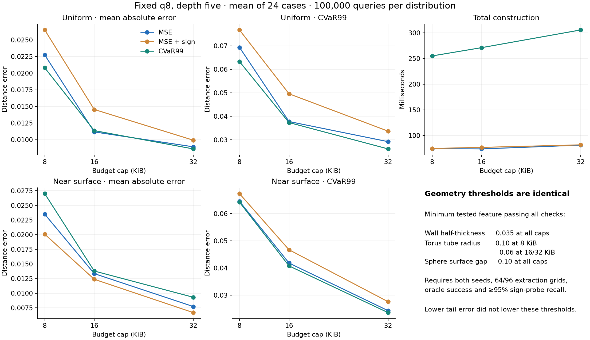
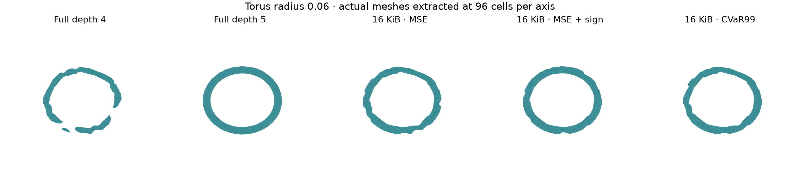

8 October 2026 · 216 equal-budget fields · depth five · 100,000 independent queries per distribution
At 32 KiB, uniform tail error falls 10.6%, but near-surface tail error falls only 3.0%, with a 20.5% increase in near-surface mean error. No allocation objective lowers the minimum recovered feature sizes.
Full study and limitations · Staged protocol

Full depth five recovers a 0.02 wall half-thickness and 0.06 torus radius where full depth four fails. Full-tree storage rises from 84,324 to 674,148 bytes. Smaller sphere gaps remain unresolved.

All four C++ test suites pass, including 4,747 tail checks. An independent NumPy decoder checks every saved fitting/evaluation point, q8 byte coverage, storage caps, fitting losses and finite-search selection. Raw failures and finest meshes are retained. Remote CI has not been observed.
The DP is exact for each threshold and the search selects the minimum over its frozen finite set. This is not continuous-threshold optimality or a feature-preservation guarantee.
Each archive is below 100 MB. Together they preserve samples, buffers, choices, threshold traces, meshes, source/executable snapshots and hashes. Source snapshots are the versions taken before each stage ran.
Archive and member SHA-256 manifest · Publication SHA-256 manifest
Verify with python scripts/tail_evidence.py docs/tail-v1 --verify-archives in a NumPy environment.